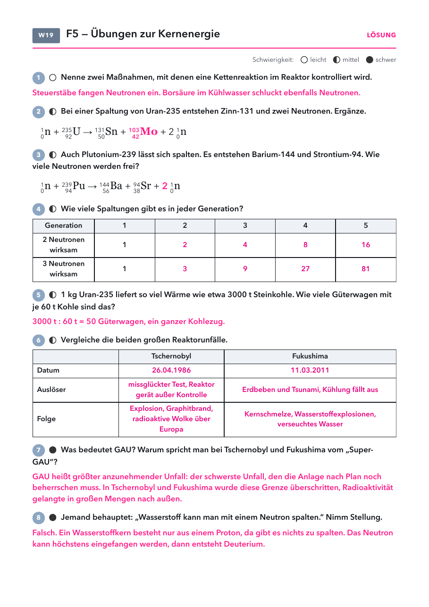

Klasse 10 · Physik · W19 (Woche ab 15.02.2027) · Abschluss Leitfrage 5
| Material | Anzahl | Hinweis |
|---|---|---|
| nicht nötig | ||
| Material | Anzahl | Hinweis |
|---|---|---|
| Periodensystem | 1× |
1) Wozu dienen die Steuerstäbe im Reaktor?
2) Was passiert bei der Kernfusion?

| Land | Stand | Hintergrund |
|---|---|---|
| Welt | gut 400 Reaktoren in Betrieb | liefern knapp ein Zehntel des Stroms |
| Frankreich | etwa zwei Drittel des Stroms | setzt weiter auf Kernkraft |
| China | baut die meisten neuen Reaktoren | wegen des schnell wachsenden Strombedarfs |
| Deutschland | seit April 2023 keiner mehr am Netz | Ausstieg nach Fukushima beschlossen |
Lösung: Steuerstäbe, Borsäure. Mo-103. 2 Neutronen. 1, 2, 4, 8, 16 und 1, 3, 9, 27, 81. 50 Güterwagen. Tabelle siehe Lösungsseite. GAU: schwerster geplanter Unfall, beide Unfälle gingen darüber hinaus. Wasserstoff hat nur ein Proton.